GPTwiki · 读懂数据 · 双语审阅稿GPTwiki Editorial · 2026-11-14
读懂数据：四个主题，八篇图文文章
中英文完整审阅稿。每篇含两张原创教学图表，点击图片可查看矢量原图。算例均为假设数据；方法来源见文内链接和文末参考资料。本地审阅副本；正式文章链接与发布记录见同目录 README。
How to Read Chart Scales Without Being Misled
A chart can contain accurate numbers and still encourage an exaggerated impression. Before interpreting a rising line or a towering bar, read the units, the starting value, and the spacing of the tick marks. These determine what distances on the page mean.
This article uses invented teaching data, not a survey or a product benchmark. The aim is to make each visual claim checkable with a few calculations.
The same change can look modest or enormous
Imagine a service reporting satisfaction of 48% in period A and 52% in period B. With an axis starting at zero, the bars have heights proportional to 48 and 52. With an axis starting at 45%, the visible heights represent only 3 and 7 percentage points above that baseline.
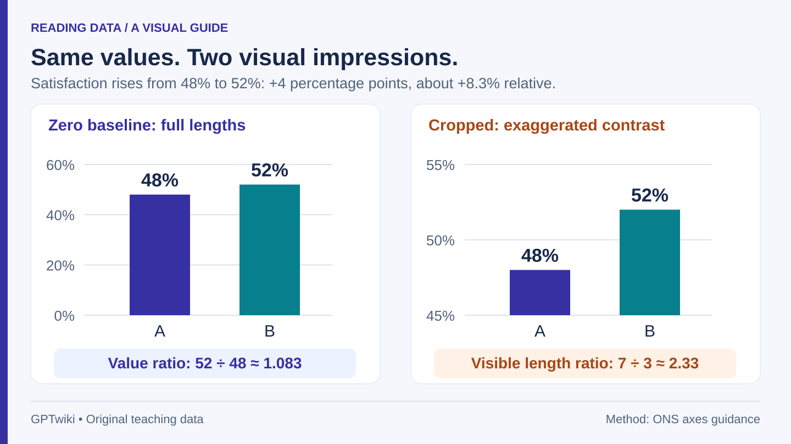
Figure 1. The same 48% and 52% values on two bar charts: a zero baseline preserves their ratio, while a 45% baseline makes the visible bars measure 3 and 7 points. Original GPTwiki diagram; invented data.
On the cropped chart, the second visible bar is 7 ÷ 3 ≈ 2.33 times as tall as the first. But the actual satisfaction rate is 52 ÷ 48 ≈ 1.083 times the earlier rate. The rate did not more than double. The picture magnified the difference by removing the common portion of both bars.
Bars invite us to compare lengths measured from a baseline. That is why the ONS bar-chart guidance calls for a zero starting point. The cropped version here is deliberately shown as a reading exercise, not as a recommended design.
There are also two valid numerical descriptions of this change:
| Question | Calculation | Answer |
|---|
| How far apart are the percentages? | 52% − 48% | 4 percentage points |
| How large is the change relative to the starting rate? | (52 − 48) ÷ 48 × 100% | About 8.3% |
A percentage-point change subtracts rates; a percentage change divides the change by a stated starting value. The distinction is explained in the ONS style guide. Writing “satisfaction rose by 4%” would not accurately describe this example.
A nonzero axis is sometimes useful
A line chart encodes values through positions and their connections, rather than through filled lengths extending from a baseline. A clearly labelled narrow vertical range can reveal variation that a zero-based scale would obscure. Showing a room’s temperature between 19 and 23°C, for example, can help someone inspect small fluctuations.
Read a zoomed line chart as a close-up: inspect the ticks before judging how large a change is. For comparisons across several panels, check that their scales match. The ONS guidance on axes distinguishes this use of cropped line or scatter plots from cropping bars. Whether a change matters still depends on the subject, not on its height in pixels.
Linear and logarithmic scales answer different questions
Now consider an invented sequence of counts: 10, 20, 40, and 80 at four equally spaced times. Each step doubles the count. Yet the increases in raw units grow: +10, then +20, then +40.
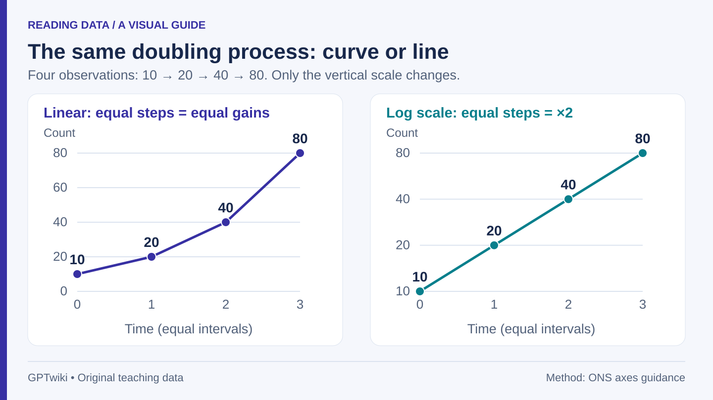
Figure 2. Counts of 10, 20, 40, and 80 bend upward on a linear scale but form a straight line on a base-2 logarithmic scale. Equal vertical steps on the right mean doubling. Original GPTwiki diagram; invented data.
On a linear scale, equal vertical distances mean equal additions. Moving from 10 to 20 covers half the distance of moving from 20 to 40. This view is useful when the question is how many additional units arrived.
On the logarithmic scale shown here, equal distances mean equal ratios. The tick labels are 10, 20, 40, and 80, spaced evenly because each is twice the previous one. The straight line represents a constant multiplicative growth rate, not a constant number of additional units. Other log charts may use ticks such as 1, 10, 100, and 1,000; the principle is the same.
Ordinary logarithmic axes cannot represent zero or negative values. Do not silently replace zero with a small positive number: that changes the visual meaning. If a chart uses another transformation, its description should say so. A logarithmic view also compresses large absolute differences; the underlying counts remain essential context.
A practical reading routine
- Identify the quantity. Is this a count, rate, index, or change? A chart of total complaints answers a different question from complaints per 1,000 orders.
- Read the scale. Where does it begin, and do equal spaces mean equal additions or equal ratios?
- Check the comparison. Are the dates equally spaced? Do panels use the same units and limits?
- Calculate one change yourself. Record both the absolute difference and its denominator before interpreting a dramatic shape.
Try it: a rate rises from 20% to 25%. That is 5 percentage points and a 25% increase relative to 20%. Neither calculation tells you why it changed or whether sampling uncertainty could explain the difference. A well-read chart describes a pattern; establishing its cause requires other evidence.
Does a steep line prove rapid growth? No. Its apparent angle also depends on the axis limits and the chart’s width and height. Compare labelled values over a specified interval instead.
Are logarithmic charts deceptive? They can be useful when ratios are the question. The problem is an unexplained scale or a conclusion that confuses ratios with raw changes, not the mere presence of logarithms.
Mean vs Median: What an Average Leaves Out
“The average delivery takes 28 minutes” sounds like a description of an ordinary order. It might instead describe eight quick deliveries and one very late one. A single number cannot show both the center and the shape of a dataset.
The arithmetic mean is the sum divided by the number of observations. The median is the middle value after sorting; for an even number of observations, the usual sample median is the mean of the two middle values. These definitions are set out in the NIST statistical handbook. They answer different questions, so choosing between them starts with what you need to know.
One delayed delivery changes the mean
Consider nine invented delivery times, in minutes:
| Sorted observation | 1 | 2 | 3 | 4 | 5 | 6 | 7 | 8 | 9 |
|---|
| Time | 18 | 19 | 20 | 20 | 21 | 22 | 22 | 23 | 90 |
The total is 255 minutes, so the mean is 255 ÷ 9 ≈ 28.3 minutes. The fifth observation is 21 minutes, so that is the median. Eight of the nine deliveries are below the mean. No order in this dataset took anything close to 28.3 minutes.
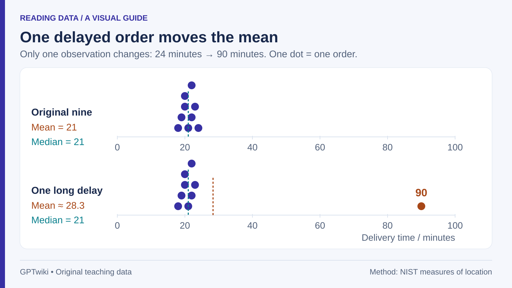
Figure 1. Replacing a 24-minute delivery with a 90-minute delivery raises the mean from 21 to about 28.3 minutes, while the median stays at 21. Each dot is one delivery; repeated values are stacked. Original GPTwiki diagram; invented data.
For comparison, replace the 90 with 24 and leave every other observation unchanged. The new total is 189 and the mean is 21. The median remains 21 because the middle position has not changed. This is the arithmetic behind the mean’s sensitivity to an extreme value: adding 66 minutes to one observation adds 66 ÷ 9 ≈ 7.3 minutes to the mean.
The median is resistant to a change at the far end of this list. It is not immune to all changes, and it does not describe how bad the longest wait was.
Choose a summary to match the question
For a customer asking about the middle experience, the median is useful. For a planner accounting for the total delivery time across orders, the mean is useful: mean × number of orders recovers the total. Neither alone measures the risk of a very late delivery.
| Decision | Useful information |
|---|
| Describe the central delivery time | Median, alongside the distribution |
| Account for total minutes across orders | Mean and order count |
| Check a 30-minute service promise | Number and proportion of orders exceeding 30 minutes |
| Investigate long waits | Tail observations, timestamps, and causes |
In our nine-order example, exactly one order exceeds 30 minutes, so the observed late-order share is 1 ÷ 9 ≈ 11.1%. That is a description of these orders, not a reliable estimate for every future day. Nine observations provide little evidence about rare delays.
Even the mean and median together can hide variation
Compare two more invented sets, each containing five deliveries:
- Set A: 19, 20, 20, 20, 21 minutes.
- Set B: 2, 3, 20, 37, 38 minutes.
Both have a mean of 20 and a median of 20. A customer’s experience is nevertheless much less consistent in set B.
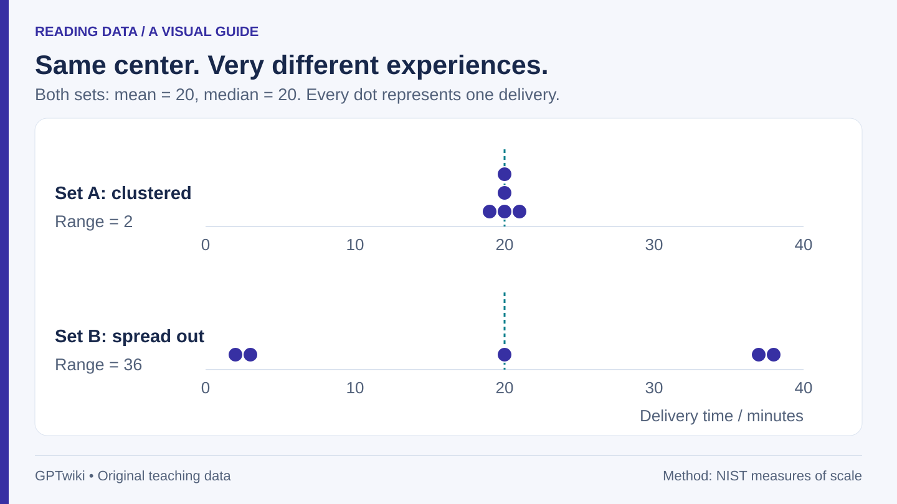
Figure 2. Two datasets have the same mean and median of 20 minutes. Set A ranges from 19 to 21; set B ranges from 2 to 38. Equal averages do not imply equal consistency. Original GPTwiki diagram; invented data.
The range is 2 minutes in A and 36 in B. Range is easy to understand but depends entirely on the two extremes. Other summaries include standard deviation and the interquartile range, which describes the width of the middle half of the data. The NIST discussion of spread explains why these measures respond differently to the center and tails. A dot plot is particularly informative when the dataset is small enough to display every observation.
Do not average group averages without their sizes
Suppose one shop has two orders with a mean of 10 minutes, and another has eight orders with a mean of 20 minutes. Averaging the two shop means gives 15 minutes, which treats the shops equally. It does not treat the ten orders equally.
The overall order mean is (2 × 10 + 8 × 20) ÷ (2 + 8) = 18 minutes. It is a weighted mean, with order counts as weights. The unweighted figure can answer a question about the average shop, but it answers a different question from the average order. Group medians cannot generally be combined this way to recover a pooled median.
What to ask when someone quotes an average
Ask which average was calculated, what each observation represents, how many there were, and over what period. Then ask for a plot or a measure of spread. If the question concerns reliability, request the relevant late-event rate as well.
Should the 90-minute delivery be deleted? Only a documented reason can justify excluding it, such as a confirmed measurement error or an observation outside the defined scope. A real delay is evidence about the service. A useful report can show all observations and explain what changes under a clearly labelled exclusion.
Try it: changing the 90-minute observation to 180 raises the mean by 90 ÷ 9 = 10 minutes, to about 38.3. The median stays at 21. If the business reports only the median, that serious worsening at the tail disappears from the headline.
Why 99% Accuracy Can Hide a Useless Classifier
Suppose a factory inspects 10,000 parts, of which 100 are defective. A system that labels every part acceptable is correct on 9,900 parts: 99% accuracy. It also misses every defect. The impressive score reflects how common acceptable parts are, rather than a useful ability to find defects.
This is an invented teaching example, not a claim about a deployed model. Defects are the “positive” class; acceptable parts are the “negative” class. Positive names the condition being detected, not something desirable.
Count the four possible outcomes
Now imagine a detector that catches 90 of the 100 defects and wrongly flags 198 of the 9,900 acceptable parts. Its results form a confusion matrix:
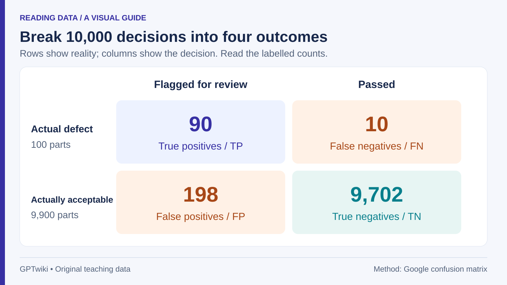
Figure 1. Of 10,000 invented parts, the detector flags 90 real defects and 198 acceptable parts, misses 10 defects, and correctly passes 9,702 acceptable parts. Rows are actual condition; columns are the detector’s decision. Original GPTwiki diagram.
| Actual condition | Flagged for review | Passed | Total |
|---|
| Defective | 90 true positives | 10 false negatives | 100 |
| Acceptable | 198 false positives | 9,702 true negatives | 9,900 |
| Total | 288 | 9,712 | 10,000 |
The four labels keep the denominators straight. Google’s introduction to the confusion matrix explains this way of organizing binary decisions.
Four metrics, four different questions
For this detector, the calculations are:
| Metric | Question | Calculation |
|---|
| Accuracy | What share of all decisions were correct? | (90 + 9,702) ÷ 10,000 = 97.92% |
| Recall | What share of actual defects were caught? | 90 ÷ 100 = 90% |
| Precision | What share of flagged parts really were defective? | 90 ÷ 288 = 31.25% |
| False-positive rate | What share of acceptable parts were wrongly flagged? | 198 ÷ 9,900 = 2% |
These are distinct conditional proportions, as defined in Google’s metric guide. A 2% false-positive rate does not mean that only 2% of alerts are wrong. Here, 198 ÷ 288 = 68.75% of the alerts are false alarms. The first percentage uses acceptable parts as its denominator; the second uses flagged parts.
Notice that this detector has lower accuracy than the “pass everything” rule. It can still be more useful if catching defects is valuable and human review is affordable. Deciding that requires the costs of missed defects and unnecessary review, not just one metric.
The base rate changes what an alert means
The base rate is the fraction of actual defects among all inspected parts. In the first example it is 1%. Now suppose the detector is used on a different batch with 1,000 defects and 9,000 acceptable parts: a 10% base rate.
For illustration, assume recall stays at 90% and the false-positive rate stays at 2%. Then it catches 900 defects and wrongly flags 180 acceptable parts. Precision becomes 900 ÷ (900 + 180) ≈ 83.3%.
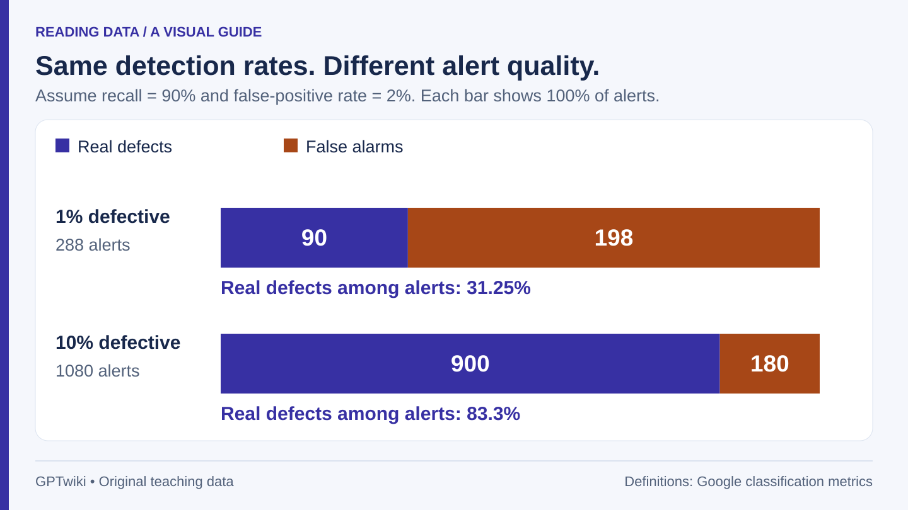
Figure 2. With recall fixed at 90% and the false-positive rate fixed at 2%, defects make up 31.25% of alerts at a 1% base rate and about 83.3% at a 10% base rate. Each bar represents 100% of alerts, not equal numbers of parts. Original GPTwiki diagram; hypothetical conditions.
The model has not become better at distinguishing the two classes under these assumptions. Its alerts contain more genuine cases because the incoming batch contains more defects. The relevant arithmetic is:
Precision = (recall × base rate) ÷ [(recall × base rate) + (false-positive rate × (1 − base rate))].
Use proportions such as 0.90 and 0.01 in this formula. It is simply the count calculation above expressed per inspected part. Google’s metrics glossary provides the underlying definitions; the two factory batches and calculations here are original worked examples.
In practice, changing batches may also change lighting, defect types, equipment, or model performance. Holding the two rates constant isolates the base-rate effect; it is not a promise that a detector transfers unchanged to a new setting.
A threshold is an operating choice
Many classifiers produce a score and flag cases above a selected threshold. Lowering it generally flags more cases, including both additional true positives and additional false positives. Raising it generally does the reverse. The actual balance must be measured on representative labelled data; a score is not automatically a well-calibrated probability.
An inspection team might compare thresholds by the number of reviews it can perform and the number of defects it can tolerate missing. A detector used only to prioritize human review has a different operating context from one that automatically discards parts. Reporting the threshold and the resulting counts makes those choices inspectable.
How to read a model performance claim
Request the evaluation sample size, the class proportions, the four outcome counts, and the decision threshold. Ask whether evaluation data were kept separate from training and whether their conditions resemble deployment; Google’s dataset-splitting guidance explains why a separate, representative test set matters. Also inspect relevant subgroups: a pooled score can hide poor performance on one kind of part.
Try it: with 10,000 parts, a 5% defect rate, 90% recall, and a 2% false-positive rate, there are 450 true alerts and 190 false alerts. Precision is 450 ÷ 640 ≈ 70.3%. The denominator is all alerts, not all defects.
Is accuracy ever useful? Yes, as one overall description when class balance and error costs are understood. It becomes misleading when it substitutes for those details.
Does high recall guarantee trustworthy alerts? No. Recall describes finding actual cases. Precision describes the contents of the review queue. A responsible evaluation reports both when both matter.
ENGLISH · sampling-bias-large-surveys ·
目录 / IndexWhy a Bigger Survey Can Still Give the Wrong Answer
A survey with thousands of responses can describe its respondents very precisely while describing the intended population poorly. The first question is not just “How many answered?” It is “Who had a chance to answer, and who actually did?”
Sampling variation is the variation caused by which observations happen to be selected. Selection bias arises when the process systematically favors observations that produce a different answer from the population of interest. Increasing sample size can reduce random variation under a suitable design; it does not automatically remove a systematic mismatch. Statistics Canada’s introduction to sample selection explains why design and sample size both matter.
An invented campus survey
Imagine a campus with 1,000 students: 800 commute and 200 live on campus. In this teaching example, we know everyone’s preference about extending an evening shuttle service:
| Group | Students | Support within group | Supporters |
|---|
| Commuters | 800 | 20% | 160 |
| Campus residents | 200 | 80% | 160 |
| All students | 1,000 | 32% | 320 |
Now suppose an opt-in survey receives 100 commuter responses and 100 resident responses. Assume, for the moment, that respondents within each group have exactly their group’s support rate. There are 20 commuter supporters and 80 resident supporters, so the survey reports 100 ÷ 200 = 50% support.
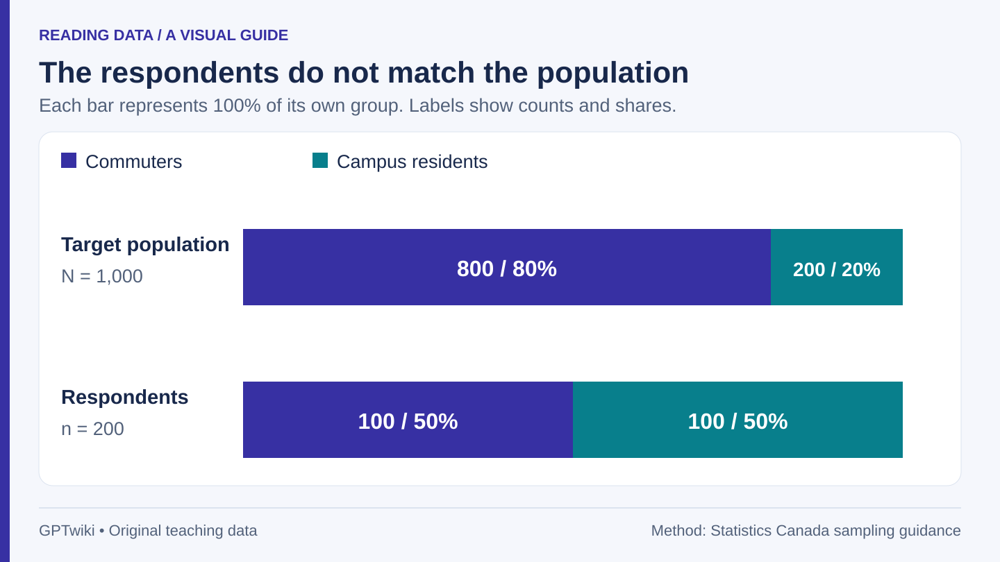
Figure 1. Commuters make up 80% of the invented campus population but only 50% of survey respondents. Residents are 20% of the population and 50% of respondents. Different group proportions change the combined result. Original GPTwiki diagram.
The 50% is an accurate description of those 200 answers. It is a poor estimate of the campus-wide 32% because the group with higher support is overrepresented. If the survey obtained twice as many answers with the same group proportions and the same within-group rates, it would still report 50%. More of the same selection process has not solved the problem.
These numbers were constructed to isolate one mechanism. They do not imply that residents or commuters have these preferences in any real institution.
What weighting can fix
If we know the population shares and the respondents represent their own groups, we can weight the two group rates by the correct proportions:
0.80 × 20% + 0.20 × 80% = 32%.
Equivalently, each commuter response can represent eight students and each resident response two. That reconstructs 800 commuters and 200 residents, with 160 supporters in each group.
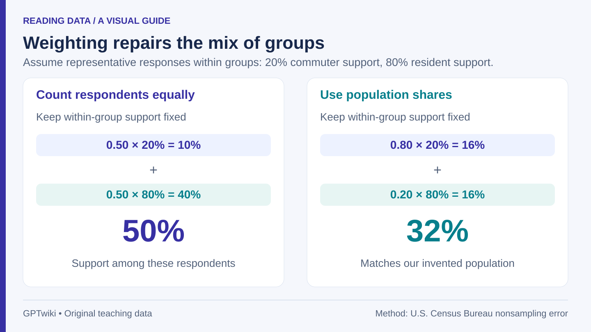
Figure 2. Giving the two respondent groups equal weight produces 50% support. Using population weights of 80% commuters and 20% residents gives 32%, matching the invented population only because the within-group response rates are assumed representative. Original GPTwiki diagram.
But imagine that keen shuttle supporters are especially likely to answer within both groups. Suppose commuter respondents show 40% support and resident respondents 90%, while the real group rates remain 20% and 80%. Correcting the group proportions now gives 0.80 × 40% + 0.20 × 90% = 50%, still far above the true 32%.
Weighting fixed the commuter–resident mix; it did not fix differences between responders and nonresponders within those groups. The U.S. Census Bureau’s discussion of nonsampling error describes both weighting adjustments and their limits. Matching a few demographic totals is therefore useful evidence about composition, not proof that all important differences have disappeared.
Three places a survey can go wrong
- Coverage: a survey frame or invitation misses part of the target population. A QR code displayed only inside a residence hall is unlikely to reach all commuters.
- Nonresponse: selected people do not respond, and their answers would differ from those who do. A low response rate alone does not quantify the resulting bias; the missing people’s views matter.
- Measurement: the wording or response choices alter the answer. “Do you support a safer shuttle?” and “Do you support paying more for later service?” do not ask the same question.
An open online poll also lets people select themselves into the sample. Statistics Canada’s guide to non-probability sampling explains why such samples need additional assumptions before their results can be generalized. They can still be useful for collecting suggestions or finding problems; their limits depend on the claim being made.
A margin of error has a limited job
For an ideal simple random sample from a large population, the approximate 95% margin of error for a proportion near 50% is 1.96 × √(0.25 ÷ n), using the normal approximation described in Penn State’s confidence-interval lesson. At 400 responses this is about 4.9 percentage points; at 1,600 it is about 2.45. Four times the observations roughly halves this random-error margin under the stated assumptions.
Those calculations are a separate large-population illustration, not a margin of error for our 1,000-student opt-in survey. Complex designs, finite populations, clustering, and weighting require appropriate variance calculations. Most importantly, a conventional sampling margin does not cover every coverage, nonresponse, or wording problem. Attaching the simple formula to any online poll does not make it valid.
Probability sampling uses random selection with calculable inclusion probabilities. These probabilities need not all be equal. It gives a basis for statistical inference, while still requiring careful coverage, follow-up, and measurement.
Read the methods before the headline
Look for the target population, recruitment method, fieldwork dates, question wording, respondent count, weighting variables, and treatment of uncertainty. Ask whether the reported number describes respondents or estimates a wider population.
Try it: if the population were 60% commuters and 40% residents, with support still 20% and 80% within groups, overall support would be 0.60 × 20% + 0.40 × 80% = 44%. The correct weight comes from the population you want to describe, not the group balance that happens to arrive in your inbox.
读图先看坐标轴：别让尺度替你下结论
图表里的数字可能都是真的，给人的第一印象却可能被放大。一根柱子高出一大截，不一定意味着数值翻倍；一条线突然变陡，也不一定意味着增长机制发生了变化。读图时，先看单位、起点和刻度间距，再判断变化有多大。
下文所有数值都是为解释原理设计的教学数据，不代表真实调查、产品测试或行业水平。你可以用表中的数字自行复算每一个结论。
从零开始和从 45% 开始，差别在哪里？
假设某项服务的满意率从 A 期的 48% 上升到 B 期的 52%。纵轴从零开始时，两根柱子的长度分别对应 48 和 52。若把纵轴起点改为 45%，露出来的长度就分别只对应 3 和 7 个百分点。
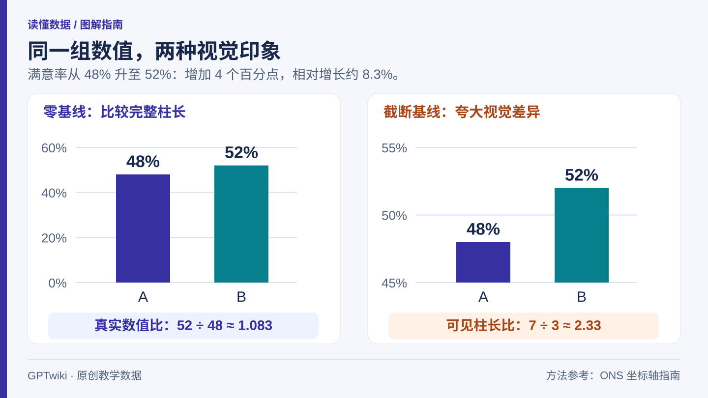
图 1：同样的 48% 与 52%，零基线保留了数值比例；从 45% 起画时，可见柱长只剩 3 与 7 个百分点。GPTwiki 原创图；数据为教学示例。
右图第二根柱子的可见长度约是第一根的 7 ÷ 3 ≈ 2.33 倍。但真实满意率之比是 52 ÷ 48 ≈ 1.083，远没有翻倍。截掉两根柱子相同的底部，会让剩余部分的比例显得格外悬殊。
柱状图让人通过“从基线延伸的长度”比较大小，因此英国国家统计局的柱状图指南要求坐标轴从零开始。这里特意画出截断版本，是为了演示误读机制，不是推荐这种设计。
同一次变化还有两种不同的数值表达：
| 想回答的问题 | 算法 | 结果 |
|---|
| 两个比例相差多少？ | 52% − 48% | 上升 4 个百分点 |
| 相对原来的比例增长了多少？ | (52 − 48) ÷ 48 × 100% | 约增长 8.3% |
“百分点”直接相减，“百分比变化”还需要除以原来的数值。ONS 的百分比写作说明明确区分两者。把这里的变化写成“满意率增长 4%”，就把两种口径混在了一起。
并不是所有图都必须从零开始
折线图通过点的位置和点之间的连线表达数值，并不依靠从基线向上填满的柱长。比如检查室内温度的细微波动，把纵轴设置在 19—23°C 之间可以更容易看清变化。
这样的图应该当作“放大观察”来读：放大了画面，实际温差并没有变大。多张图并列比较时，还要检查它们是否用了相同的范围和单位。ONS 的坐标轴指南也区分了折线图、散点图与柱状图的基线需求。变化是否重要，最终由实际问题决定，而不是由屏幕上的像素高度决定。
线性刻度看增加量，对数刻度看倍数
再看一组假设计数：在等间隔的四个时点，数值依次为 10、20、40、80。每一步都翻倍，但增加的数量分别是 10、20、40，越来越多。
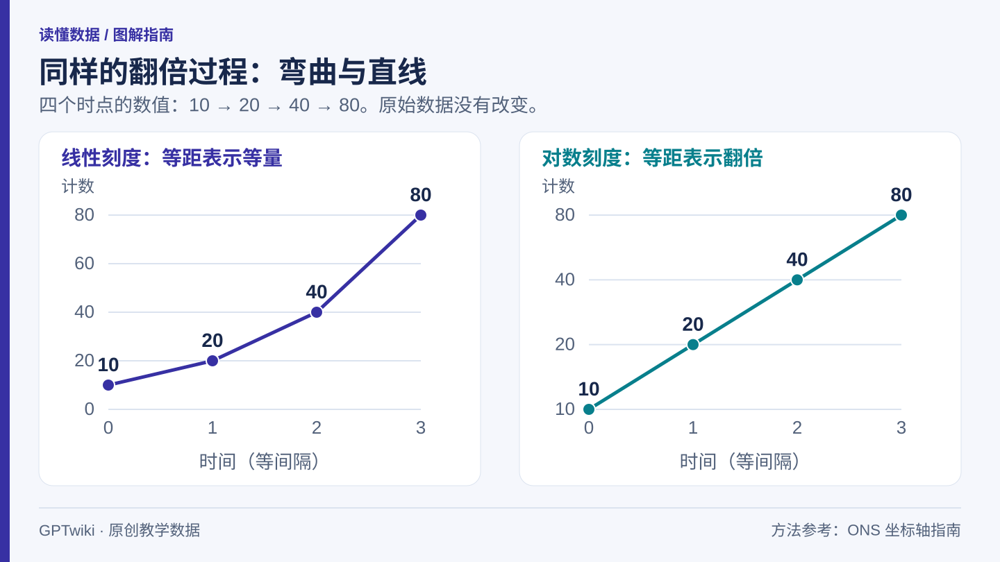
图 2：10、20、40、80 在线性坐标中向上弯曲，在以 2 为底的对数坐标中形成直线。右图相同的竖直距离表示同样的倍数变化。GPTwiki 原创图；数据为教学示例。
线性刻度中，相同距离表示相同的增加量。从 10 到 20 的距离，是从 20 到 40 的一半。如果你关心“又增加了多少件”，这种视图比较直接。
对数刻度中，相同距离表示相同的倍数。图中的 10、20、40、80 等距排列，因为相邻数值之比都是 2。此时直线说明每个等长时间段都按相同比例增长，不是每段时间增加同样多的数量。另一些对数图会标出 1、10、100、1,000，读法相同，只是相邻标记的倍数不同。
普通对数坐标无法表示零和负数。不能为了把零画进去，悄悄换成一个很小的正数；这会改变图意。若使用其他变换，也应说明具体做法。对数图会压缩较大的绝对差距，所以原始数量仍然是理解图表所需的信息。
看图时依次检查这四件事
- 量的是什么。 是人数、比例、指数，还是变化量？“投诉总数”和“每千笔订单的投诉数”回答的是不同问题。
- 刻度怎样走。 从哪里开始？相同间距是相同差值，还是相同倍数？
- 比较是否一致。 时间间隔是否等长？不同面板是否使用相同单位和范围？
- 自己算一次。 找出起点和终点，写清绝对差与相对变化的分母，再判断形状是否夸张。
练习：某个比例从 20% 升至 25%，变化是 5 个百分点，相对于原值增长 25%。这两种描述都正确，但都不能单独解释变化的原因，也不能判断抽样不确定性是否足以解释差异。读懂趋势只是描述数据的一步。
线越陡，增长就越快吗？ 不能只看角度。同一条线的视觉斜率会随纵横轴范围、图的宽高而变。应比较指定时间段里的实际数值。
看到对数坐标就该怀疑吗？ 不必。如果问题关注倍数和比例，它很有用。真正需要查清的是：有没有说明刻度，以及结论有没有把比例变化误说成数量变化。
均值与中位数：一个“平均数”藏起了什么
“平均配送时间是 28 分钟”，很容易被理解成一笔普通订单大约就要等这么久。但这组订单也可能是八笔很快送达，另有一笔严重延迟。一个数既要概括中心，又要交代分布形状，通常做不到。
算术均值是所有数值相加，再除以观测数量。中位数则先排序，再取中间位置；如果数量为偶数，通常取中间两个值的均值。NIST 统计手册给出了这些定义。选哪一种，取决于你真正想了解什么。
一笔迟到订单，怎样拉高均值？
以下是九笔假设订单的配送时间，单位为分钟：
| 排序后的位置 | 1 | 2 | 3 | 4 | 5 | 6 | 7 | 8 | 9 |
|---|
| 配送时间 | 18 | 19 | 20 | 20 | 21 | 22 | 22 | 23 | 90 |
总计 255 分钟，均值是 255 ÷ 9 ≈ 28.3 分钟。第五个数位于正中间，因此中位数为 21 分钟。九笔订单中有八笔低于均值，而且没有一笔订单的实际时间接近 28.3 分钟。
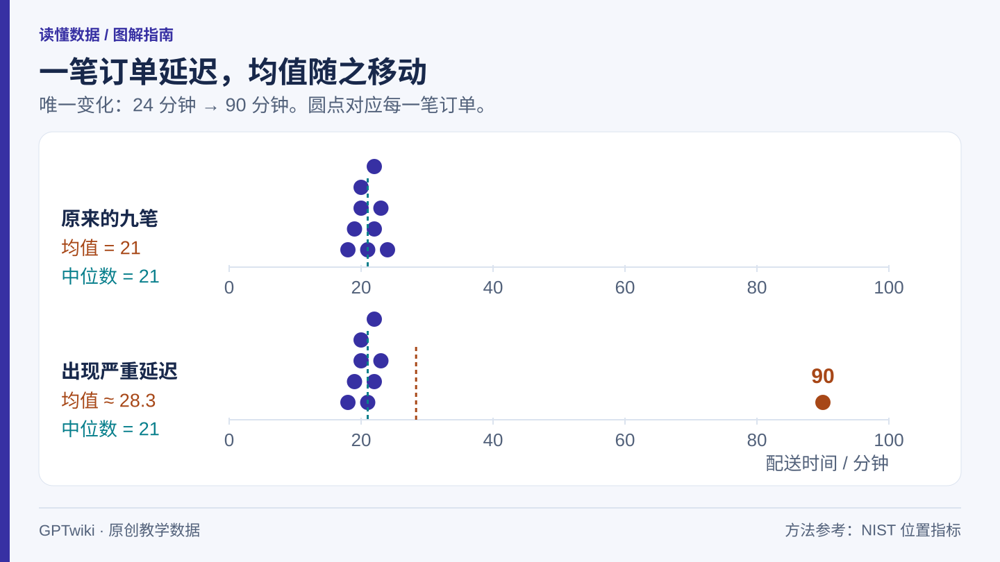
图 1：把一笔 24 分钟的订单改成 90 分钟，均值从 21 分钟升至约 28.3 分钟，中位数仍为 21 分钟。每个点代表一笔订单，相同数值的点向上堆叠。GPTwiki 原创图；数据为教学示例。
如果把 90 分钟换成 24 分钟，其他八笔保持不变，总计就成了 189 分钟，均值降到 21 分钟，中位数仍是 21 分钟。反过来说，一笔订单增加 66 分钟，会让均值增加 66 ÷ 9 ≈ 7.3 分钟。
这解释了均值为什么对极端值敏感：每一个数都会进入总和。中位数在这个例子里没有改变，是因为排序后中间的位置不变；它并不是在任何数据变化下都不变，也无法告诉你最迟的一笔究竟有多糟。
不同问题，需要不同的概括方式
如果顾客想了解位于中间的等待体验，中位数有帮助。如果调度人员要核算所有订单消耗的总分钟数，均值更直接，因为“均值 × 订单数”可以还原总量。如果要检查严重延迟，两者都不够。
| 想做的判断 | 更需要的信息 |
|---|
| 描述配送时间的中心位置 | 中位数，以及分布形状 |
| 核算订单累计耗时 | 均值与订单数 |
| 检查是否达到 30 分钟承诺 | 超过 30 分钟的笔数和比例 |
| 查找严重延迟的原因 | 尾部订单、时间记录与具体原因 |
在上面的九笔订单中，超过 30 分钟的有一笔，观测到的超时比例是 1 ÷ 9 ≈ 11.1%。这个数字只描述这九笔订单，并不意味着未来每一天都约有 11.1% 的订单超时。九个观测值不足以稳健判断少见延迟的长期概率。
均值和中位数都一样，也可能很不一样
再比较两组教学数据，每组各有五笔订单：
- A 组：19、20、20、20、21 分钟。
- B 组：2、3、20、37、38 分钟。
两组的均值都是 20，中位数也都是 20。但是，A 组的体验很集中，B 组的体验差异很大。
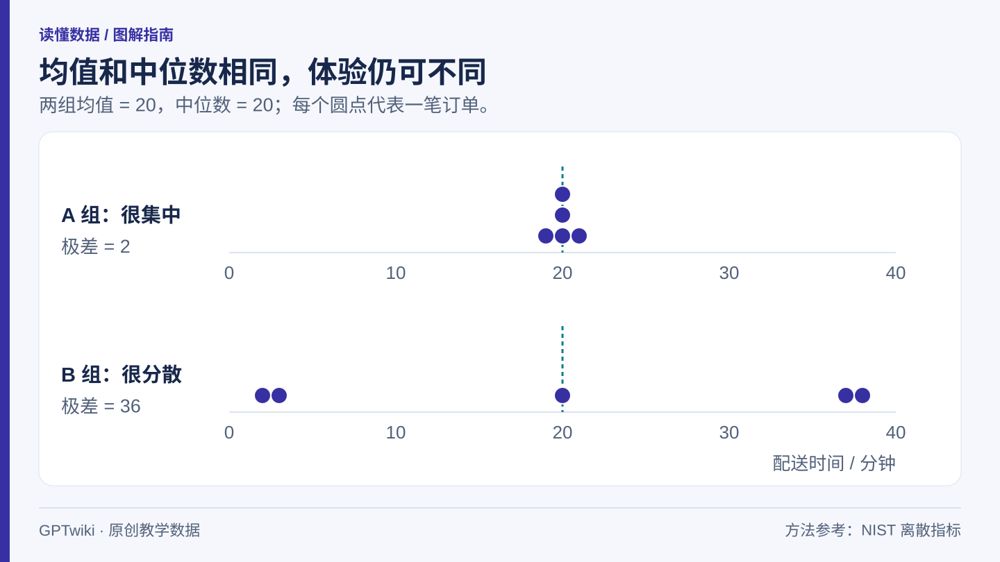
图 2：两组数据的均值和中位数都为 20 分钟；A 组范围为 19—21 分钟，B 组为 2—38 分钟。中心相同不代表稳定性相同。GPTwiki 原创图；数据为教学示例。
A 组最大值减最小值得到的极差为 2 分钟，B 组为 36 分钟。极差容易理解，但只由两端决定。还可以用标准差，或描述中间一半数据跨度的四分位距。NIST 关于离散程度的说明解释了这些指标为何对中心和尾部有不同的敏感程度。数据量较小时，直接画出所有观测值，往往比继续压缩成单个数字更清楚。
两个组的均值，不能随手再平均
假设甲店只有 2 笔订单，平均配送 10 分钟；乙店有 8 笔订单，平均配送 20 分钟。把 10 和 20 相加除以 2，会得到 15 分钟。这是在给两家店相同权重，而不是给十笔订单相同权重。
全部订单的均值应为：(2 × 10 + 8 × 20) ÷ (2 + 8) = 18 分钟。这里用订单数作权重。15 分钟可以描述“平均一家店的均值”，18 分钟描述的是“平均一笔订单的耗时”，两者对象不同。
分组中位数通常不能照这个方法合并。仅凭各组中位数与人数，一般无法还原把所有观测值放在一起后的中位数。
看到“平均”时，可以接着问什么？
先问用了哪一种平均数，每个观测值代表什么，有多少个，覆盖什么时间段。然后看分布图或离散指标。如果关心可靠性，还应要求与目标直接相关的超时比例。
那笔 90 分钟的订单应该删掉吗？ 不能仅因为它影响均值就删除。确认的录入错误、明确不属于统计范围的记录，可以按事先说明的规则处理；真实发生的严重延迟则是服务表现的一部分。必要时同时报告完整结果与明确标注的排除结果。
练习：若把 90 分钟改成 180 分钟，均值会再增加 90 ÷ 9 = 10 分钟，变为约 38.3 分钟，中位数仍是 21。此时只宣传中位数，就会把尾部体验的严重恶化藏在标题之外。
99% 准确率为什么还可能漏掉所有问题
假设一批产品有 10,000 件，其中 100 件存在缺陷。一个什么都不会、只会说“全部合格”的系统，会对其中 9,900 件判断正确，准确率达到 99%。但它同时漏掉了全部缺陷。
这不是某款真实模型的测试成绩，而是一组教学数据。例子中把“有缺陷”定义为正类，“合格”定义为负类。正类只是被检测的目标，不代表结果是好的。
先把四种结果数清楚
再假设另一个检测器找出了 100 件缺陷中的 90 件，同时把 9,900 件合格品中的 198 件错报成了疑似缺陷。可以用混淆矩阵整理结果：
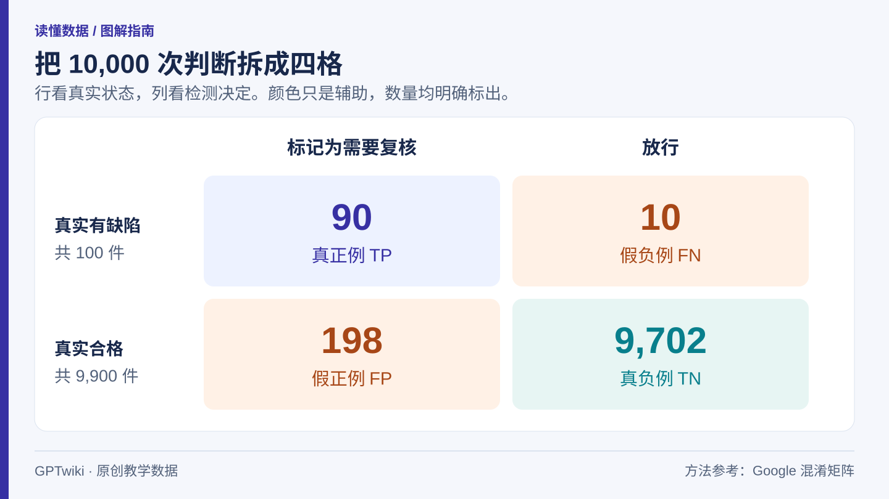
图 1：10,000 件假设产品中，90 件缺陷被检出，10 件缺陷漏检；198 件合格品被误报，9,702 件合格品被正确放行。行表示真实状态，列表示检测决定。GPTwiki 原创图。
| 真实状态 | 标记为需要复核 | 放行 | 合计 |
|---|
| 有缺陷 | 90，真正例 TP | 10，假负例 FN | 100 |
| 合格 | 198，假正例 FP | 9,702，真负例 TN | 9,900 |
| 合计 | 288 | 9,712 | 10,000 |
这些名字的价值，是帮助我们明确分子与分母。Google 的混淆矩阵教程用这一框架整理二分类决定。
四个指标，问的是四件事
| 指标 | 实际问题 | 本例计算 |
|---|
| 准确率 accuracy | 所有判断中，有多少判断正确？ | (90 + 9,702) ÷ 10,000 = 97.92% |
| 召回率 recall | 真正有缺陷的产品中，找出了多少？ | 90 ÷ 100 = 90% |
| 精确率 precision | 被标记的产品中，有多少真的有缺陷？ | 90 ÷ 288 = 31.25% |
| 假正例率 false-positive rate | 真正合格的产品中，有多少被错报？ | 198 ÷ 9,900 = 2% |
这些定义可在 Google 的分类指标说明中核对。中文日常表达常把“准确”和“精确”混用，读模型报告时最好直接看公式。
尤其要注意：“假正例率只有 2%”，不等于“告警中只有 2% 是错的”。本例中告警有 288 件，198 件属于误报，所以告警中的错误比例是 198 ÷ 288 = 68.75%。两个百分比的分母分别是“全部合格品”和“全部告警”，当然会不同。
这个检测器的准确率甚至低于“全部放行”的 99%。但如果检出缺陷很有价值、人工复核成本可以承担，它仍可能更有用。需要比较漏检与复核的实际代价，不能只看谁的准确率更高。
基准率改变了告警意味着什么
基准率是待检产品中真实缺陷所占的比例。第一批是 1%。现在换成另一批 10,000 件产品：1,000 件有缺陷，9,000 件合格，基准率变成 10%。
为了只观察基准率的影响，暂时假设召回率仍为 90%，假正例率仍为 2%。那么真正例有 900 件，假正例有 180 件。精确率变为 900 ÷ (900 + 180) ≈ 83.3%。
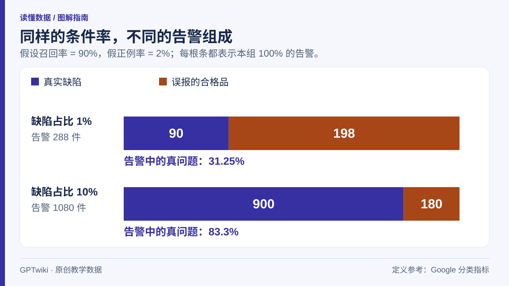
图 2：固定召回率为 90%、假正例率为 2% 时，缺陷基准率从 1% 变为 10%，告警中真实缺陷的比例从 31.25% 变为约 83.3%。每根条都代表本组全部告警，不代表相同产品数量。GPTwiki 原创图；条件为教学假设。
在这组假设下，检测器区分两类产品的能力并没有改变；进入系统的真实问题变多了，告警自然更容易指向真实问题。把上面的计数缩放到每件产品，可以写成：
精确率 = (召回率 × 基准率) ÷ [召回率 × 基准率 + 假正例率 × (1 − 基准率)]。
代入时使用 0.90、0.01 这样的比例。它只是前面计数关系的另一种写法。基础术语可参照 Google 的指标词汇表；工厂场景与两批产品的数值均为本文原创算例。
现实中，换一批产品还可能同时改变光照、设备、缺陷类型和模型表现。因此，“两个条件率保持不变”是为了隔离机制的假设，不是模型可以直接迁移的保证。
阈值是一项业务选择
许多分类器先给出一个分数，再按阈值决定是否标记。降低阈值通常会带来更多告警，包括更多真正例，也包括更多假正例；提高阈值通常相反。实际取舍必须用有可靠标签、接近使用场景的数据测量。模型分数也不天然等于校准良好的概率。
如果人工每天最多复核一定数量的产品，就可以比较不同阈值对应的复核量和漏检量。只用来排序、辅助人工检查的系统，与直接决定报废产品的系统，面对的成本结构并不相同。把阈值和四类计数一起报告，才能让读者看清这项选择。
读模型成绩时，先找这些信息
需要知道测试样本量、各类占比、四种结果的数量，以及使用了什么阈值。还应检查测试数据是否独立于训练过程，是否接近实际部署条件；Google 的数据集划分说明介绍了独立且有代表性的测试集为何重要。还要检查某类产品的差表现是否被总体平均数盖住。
练习：如果仍检查 10,000 件，缺陷占比为 5%，召回率为 90%，假正例率为 2%，那么真正例是 450 件，假正例是 190 件。精确率为 450 ÷ 640 ≈ 70.3%。分母是全部告警，而不是全部缺陷。
准确率是不是完全没用？ 不是。理解类别比例和错误代价后，它可以作为总体描述之一。问题在于让它代替其他必要信息。
召回率很高，就说明告警值得相信吗？ 不一定。召回率回答“实际问题找回多少”，精确率回答“复核队列里有多少是真问题”。两种问题都重要时，就应该一起报告。
问卷收得越多，为什么答案仍可能越偏
一份问卷收到了成千上万条回答，可以很精确地描述这批回答者，却仍然无法准确描述你关心的全部人群。除了“有多少人答了”，还要问：“谁有机会回答，最后又是谁真的回答了？”
抽样波动来自这一次恰好抽中了哪些人。选择偏差则来自调查过程系统性地偏向某些人，而这些人的答案与目标总体不同。在合适的设计下，增加样本可以减少随机波动，但不会自动消除系统性差异。加拿大统计局的样本选择说明讨论了样本量与调查设计各自的作用。
一份假设校园问卷
假设某校有 1,000 名学生，其中 800 人通勤、200 人住校。为了说明原理，我们设定每个人对“延长晚间接驳车服务”的态度都已知：
| 群体 | 总人数 | 组内支持率 | 支持人数 |
|---|
| 通勤学生 | 800 | 20% | 160 |
| 住校学生 | 200 | 80% | 160 |
| 全部学生 | 1,000 | 32% | 320 |
现在发出一份自愿填写的问卷，最后收到了 100 位通勤学生和 100 位住校学生的回答。暂时假设各组回答者的支持率恰好与各组真实支持率一致：通勤组有 20 人支持，住校组有 80 人支持。问卷就会报告 100 ÷ 200 = 50% 的支持率。
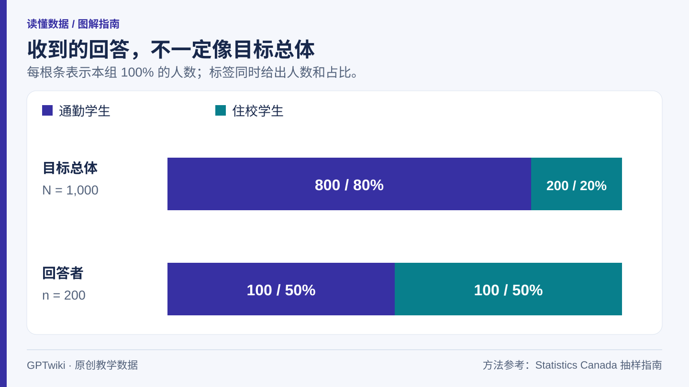
图 1：假设校园中，通勤学生占总体的 80%，却只占问卷回答者的 50%；住校学生占总体的 20%，却占回答者的 50%。组别比例不同，会改变汇总结果。GPTwiki 原创图。
50% 并没有算错，它准确描述了这 200 份答案。问题在于，把支持率较高的住校群体赋予了过多比重，就无法代表全校的 32%。如果保持同样的群体比例和组内支持率，把回答数量翻倍，结果还是 50%。
这里的偏好和人数完全是教学设定，用来隔离一种机制，不代表现实中通勤学生或住校学生通常持有怎样的意见。
加权可以修复什么？
如果已知总体构成，并且回答者能代表各自所在群体，可以按真实群体占比重新组合支持率：
0.80 × 20% + 0.20 × 80% = 32%。
也可以把每位通勤回答者看作代表 8 名学生，每位住校回答者代表 2 名学生。这样重建出来的是 800 位通勤学生与 200 位住校学生，两组支持人数各为 160。
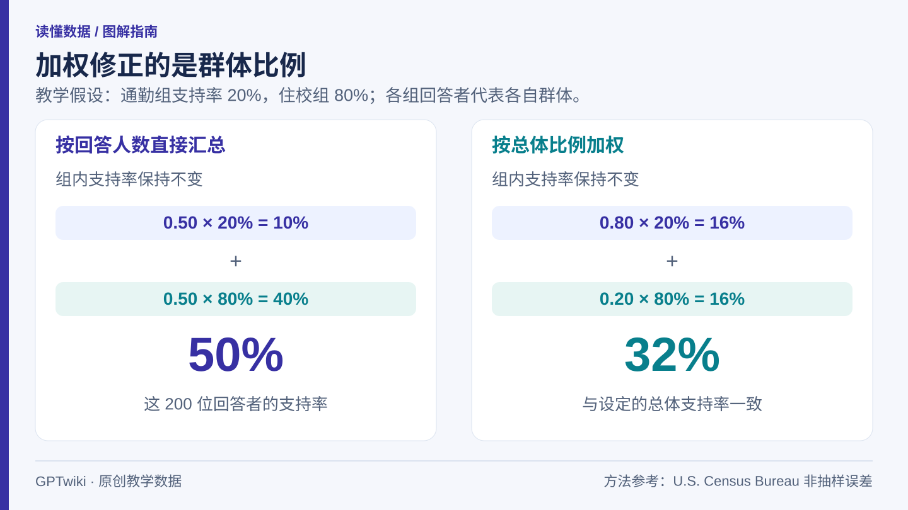
图 2：两组回答者各占一半时，汇总支持率为 50%；改用总体中 80% 通勤、20% 住校的权重后，得到 32%。能修复的前提是各组回答者代表了各自群体。GPTwiki 原创图；数据为教学示例。
但如果两个群体内部都是积极支持接驳车的人更愿意答题，会怎样？设通勤回答者支持率为 40%，住校回答者为 90%，真实组内支持率仍分别是 20% 和 80%。即使使用正确的群体权重，结果也会变成 0.80 × 40% + 0.20 × 90% = 50%，仍高于真实的 32%。
加权修复了通勤与住校的比例，却没有修复每一组内部“回答者和没回答的人不一样”的问题。美国人口普查局关于非抽样误差的说明介绍了加权调整及其局限。因此，样本在少数人口特征上与总体一致，是有用的构成信息，但不是全部偏差已经消失的证明。
问卷可能在哪些环节出问题？
- 覆盖不足：邀请或名单遗漏目标人群的一部分。只把二维码贴在宿舍楼里，难以接触到所有通勤学生。
- 无应答：被选中的人没有回答，且他们的意见可能与回答者不同。应答率低本身并不能量化偏差，还要看缺席者可能怎样回答。
- 测量问题：题目措辞或选项改变了被测量的内容。“是否支持更安全的接驳服务”和“是否愿意为延长服务付更高费用”，不是同一个问题。
公开网络投票还允许人们自行选择是否进入样本。加拿大统计局关于非概率抽样的说明解释了，为什么这种结果推广到总体时需要额外假设。它仍可用于收集建议、发现问题，但可支持的结论必须与用途匹配。
“误差正负几个点”没有包办所有问题
对来自较大总体、设计理想的简单随机样本，如果比例接近 50%，近似 95% 误差范围的半宽可写成 1.96 × √(0.25 ÷ n)，所用正态近似见宾州州立大学的置信区间课程。样本为 400 时约为 4.9 个百分点，1,600 时约为 2.45 个百分点。在这些假设下，样本量增加到四倍，随机误差范围大约缩小一半。
这是一组独立的大总体计算示例，不是给前面 1,000 人校园中的自愿问卷套上误差范围。有限总体、聚类抽样、权重和其他复杂设计，需要相应的方差计算。传统抽样误差范围也不能覆盖所有遗漏、无应答和措辞问题。任何网络问卷都能把数字代进公式，但这不会让推断自动成立。
概率抽样使用随机选择，并能计算各单位被选中的概率；这些概率不一定相等。它提供了统计推断的基础，但仍需要做好覆盖、追访和题目设计。
先读方法，再读醒目的百分比
查看目标总体、招募方式、调查日期、完整题目、回答人数、加权变量以及不确定性的处理方法。尤其要弄清楚，报告描述的是回答者，还是在估计更广泛人群。
练习：若目标总体改成 60% 通勤学生、40% 住校学生，组内支持率仍为 20% 和 80%，总体支持率就是 0.60 × 20% + 0.40 × 80% = 44%。权重应来自你想描述的总体，而不是来自刚好收到的回答比例。